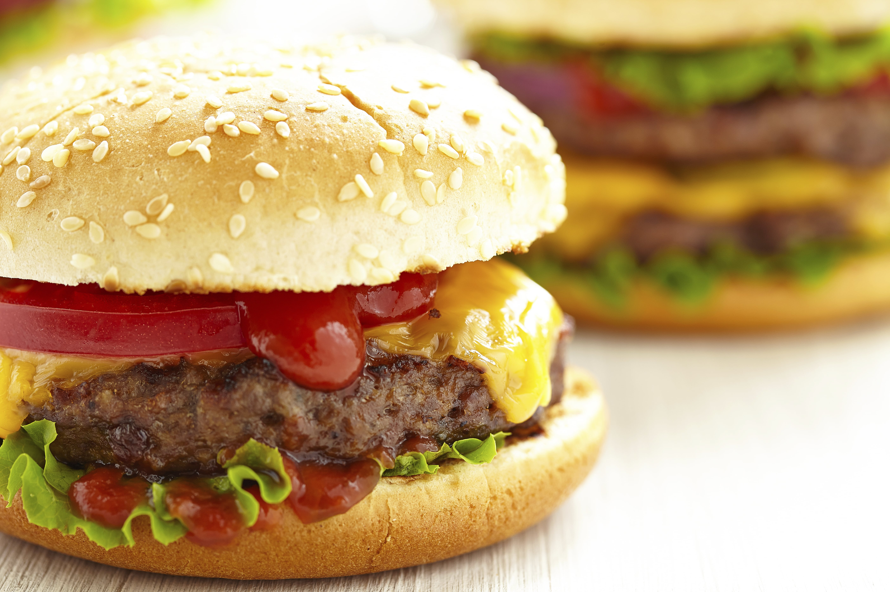

Hamburguesa
Las hamburguesas son un tipo de comida rápida que se
ha popularizado al rededor del mundo. En esta página aprenderás
a prepararlas por tu cuenta.

Ingredientes
- Una cucharada de vinagre balsámico
- Una cucharada de aceite de oliva extra virgen
- Sal y pimineta al gusto
- Cuatro rebanadas de tomate
- Un paquete de carne para hamburguesa
- Una cucharada de pasta de tomate
- ¼ taza de albahaca fresca picada
- ¼ de queso parmesano rallado
- Un diente de ajo picado
- Una cucharada de pimienta negra
- Queso mozzarella rallado
- Pan para hamburguesa
Preparación